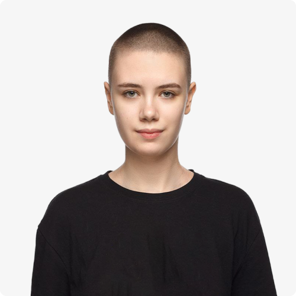

Привет, я Олеся
UX/UI Designer
Проектирую цифровые продукты для web и mobile, превращая сложные задачи в понятные и удобные интерфейсы.
- 2 года опыта
- Mobile
- Web
- B2B
- B2C
- Vibe coding

UX/UI Designer
Проектирую цифровые продукты для web и mobile, превращая сложные задачи в понятные и удобные интерфейсы.